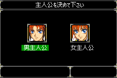
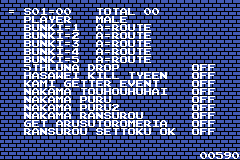

Super Robot Taisen R (Japan)
Flash 512K gbakit Built-In Debug Menu Patch 💾 MultiBoot 🎮 4P Link
Cartridge Identity
- Game Code
AJ9J(FamilyAJ9)- Header Title
SRWR- Maker / Revision
D9/ rev0- ROM Size
- 8.0 MiB (8,388,608 B)
- Save Media
Flash 512K- SHA-256
1a341f6f246ede623df31784175dc887b292123fea5832a868a73d7477050dc6- Engine / SDK Group
comm-010(33 families)
Screenshots

Debug Menu Re-Enablement Patch (.ips)
Download AJ9J-debug.ips (15 B IPS / 2 B delta)
- Hook Mechanism
thumb_imm_scene_override· Patch scene dispatcher at 0x08004d72 (ldr r0,[r4] -> movs r0,#49) to select jump-table index 48 (AGB SYSTEM DEBUG MENU at 0x08004e60)- IPS SHA-256
9c0ded986dc8477fabd1aa02bbe457a6892fa3dd7b618aa8d2cfe97b77c3102c
gbakit patch apply AJ9J-debug.ips original.gba patched-debug.gba

Link Cable & Multiplayer Communications
This title contains detected communication capabilities: 💾 MultiBoot 🎮 4P Link.
Detailed protocol specifications, SIO registers, Joybus commands, and MultiBoot sequences are documented in the Link & Multiplayer Reference.
- Multi-Player SIO (4P)
- 16-bit ring network · SIOCNT (
0x04000128) literals:0x006110,0x00616c,0x006538· SIODATA32/SIOMULTI0 (0x04000120) literals:0x00622c,0x006290,0x0062fc - Single-Cart MultiBoot
- Single-Cartridge MultiBoot (Download Play) client/server handler · Thumb SWI 0x25 (
0xDF25):0x056442,0x193250,0x19a126,0x19fbe0
Battery Save Support in gbakit
Built-in definition (AJ9J)
gbakit save verify AJ9J save.sav
gbakit save decode AJ9J save.sav
gbakit save fix AJ9J damaged.sav -o repaired.savROM Assets, Compression & Audio
- BIOS Compression
- LZ77 (
0x10): 1 streams · RLE (0x30): 0 streams - ROM Pointer Tables
- 31 tables (0 pointing to validated compressed streams)
- SDK Backup Tags
FLASH_V126
Asset Map (formatkit.asset-map.v1)
Download AJ9J-r0-1a341f6f246ede62.asset-map.json.gz (90,127 B (88.0 KiB)) Verified PASS · 7.64% coverage
| Metric | Bytes / Value | Entries |
|---|---|---|
| Identified | 58,552 B (57.2 KiB) (0.70%) | 796 |
| Mapped | 0 B (0.00%) | 0 |
| Opaque | 582,136 B (568.5 KiB) (6.94%) | 1 |
| Unknown | 7,747,920 B (7.39 MiB) (92.36%) | 758 |
| Total ROM Size | 8,388,608 B (8.00 MiB) | 1,555 |
| Coverage % | 7.64% | — |
| Entries w/ Code Refs | 824 / 1,555 (52.99%) | — |
Top Identified Formats: gfx.gba-palette (794 · 52,288 B (51.1 KiB)) · rom.multiboot (1 · 6,072 B (5.9 KiB)) · gba.rom-header (1 · 192 B)
Largest unknown Extents (Headerless / Custom Asset Candidates)
| Offset | Size | Shannon Entropy | Code Refs |
|---|---|---|---|
0x00126DE0 | 889,376 B (868.5 KiB) | 6.720 bits/B | 0 |
0x0049315C | 590,828 B (577.0 KiB) | 6.387 bits/B | 0 |
0x003504FC | 531,224 B (518.8 KiB) | 7.042 bits/B | 0 |
0x00578028 | 491,348 B (479.8 KiB) | 6.892 bits/B | 0 |
0x00611C2C | 451,404 B (440.8 KiB) | 7.268 bits/B | 0 |
gzip -dk AJ9J-r0-1a341f6f246ede62.asset-map.json.gz && gbakit map verify rom.gba AJ9J-r0-1a341f6f246ede62.asset-map.json
gbakit assets export rom.gba --asset-map AJ9J-r0-1a341f6f246ede62.asset-map.json -o out/Text, Fonts & Scene Data
- Primary Text Encoding
- Shift-JIS (uncompressed) (
1ASCII strings ·142Shift-JIS runs) - Font & VWF Indicators
- VWF Width Table 1bpp Font · BIOS SWIs: BitUnPack
0x10:16· LZ770x11/12:30· Huffman0x13:14· RLE0x14/15:13 - Scene & Packaging
30ROM pointer tables (≥32 entries,5≥200) ·289relativeu32TOCs ·325OAM metasprite hits
Hardware MMIO Subsystems
ppu_display0x8000bb0,0x8001294save_bus_sram_flash0x8056458,0x80567b8